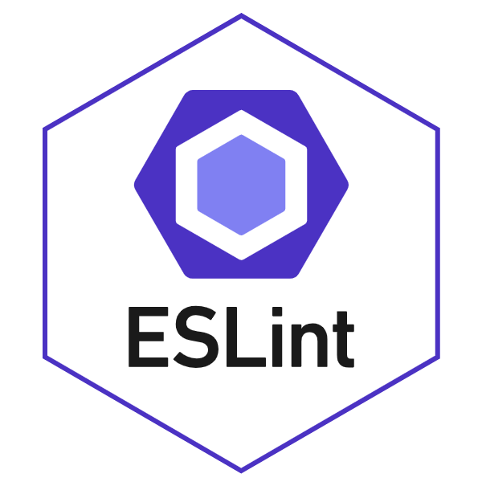

ESLint is a code analysis tool that aids users to always have good coding habits and quality code, providing consistency. This can be important to users especially in a team environment because having a coding standard allows code to be more uniform. That means you’ll spend less time trying to go through someone’s code. ESLint is also helpful for users who frequently find themselves stuck on errors. It helps users find errors quickly which can be beneficial for those careless mistakes. This tool not only catches bad coding style and errors but also offers users insightful suggestions for further improvement, enhancing code readability and reliability.
Coding standards are not new to me but I can definitely say that adhering to them can be a challenge, to say the least. However, ESLint has been nothing but helpful. ESLint ensures that I am on the right track and have good coding habits. For example, whenever I have unnecessary spaces or errors, it notifies me in real-time. I also can see myself saving more time because this allows me to focus on the coding tasks instead of having to deal with code quality issues.
My first impression of this tool was that it was very confidence-inspiring. Compared to any software I used, I think this is the best so far. I’ve never used modern software like this where it catches an error before I even run the program. It knows where I made the mistake, highlighting it in red and a green check mark appears whenever I have no errors. I remember having one spelling error and spending hours trying to figure out what was causing the error but with this, I don’t see myself ever having to do that again. I like the real-time feedback it provides because I can identify where I went wrong but also educates me about the type of error I made.
In conclusion, ESLint along with IntelliJ IDEA have significantly improved my coding experience as a beginner. The enforcement of coding standards ensures that I start with a strong foundation, and real-time error detection helps me learn and grow. While challenges may remain, I hope this experience will serve as a valuable opportunity to enhance my coding skills.